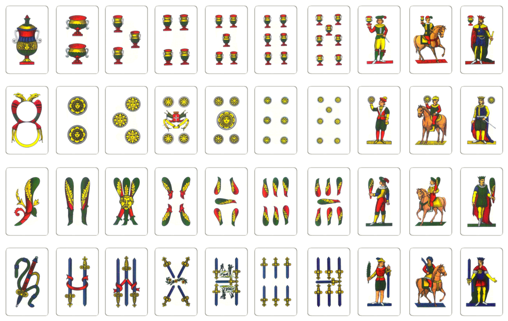

Home
Gioco delle coppie
Conto corrente
Progetto di Programmazione 1
2018/2019
Antonio Sarno Matricola: 0124001914
Traccia 1: Gioco delle coppie di carte
Sviluppare un algoritmo per la simulazione del gioco delle coppie di carte tra due
giocatori identificati dai loro nomi. Inizialmente “mischiare” un mazzo di carte
napoletane. L’algoritmo per mischiare le carte si basa sull’idea di scambiare
effettivamente a coppie le carte del mazzo; una variabile in input permette di indicare
quante volte si devono effettuare gli scambi.
Viene scelto casualmente quale dei due giocatori deve iniziare il gioco. Vengono
“scoperte” due carte la quale posizione è indicata dal primo giocatore. Se le due carte
hanno lo stesso valore il giocatore si aggiudica un punto e le due carte vengono scoperte.
Il giocatore continua finchè non sbaglia (non trova due carte uguali) e il turno passa
all’altro giocatore.
Ad ogni turno il giocatore ha a disposizione l’elenco delle carte coperte e quelle
scoperte. Il gioco termina quando si scoprono tutte le carte.
Il giocatore che ha totalizzato più punti vince la partita.
Implementare il programma ed effettuare almeno 3 test.

Traccia 2: Conto corrente
Si supponga di voler gestire i conti correnti di n utenti. Ogni utente è identificato dal
Cognome, Nome, numero del conto, lista movimenti.
Gestire i conti correnti e gestire le seguenti operazioni:
• Inserire un nuovo correntista a cui viene assegnato un codice univoco.
• Visualizzare la lista movimenti di un dato correntista (dato il numero del
conto o Cognome/Nome) in una fissata data.
Implementare l’algoritmo per la simulazione dei conto corrente. Effettuare e
visualizzare almeno un test per ognuna delle opzioni richieste
Tocca il Logo per tornare su!
_________________________________________________________________________________________________________________________________________________